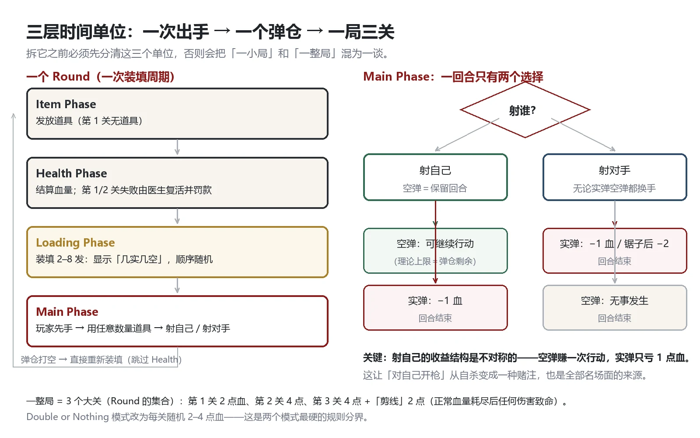
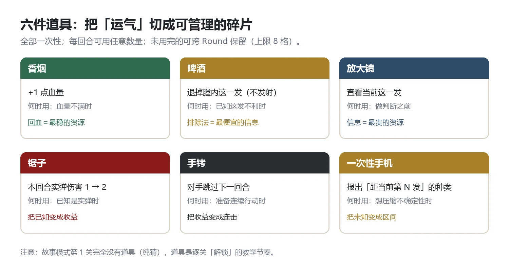
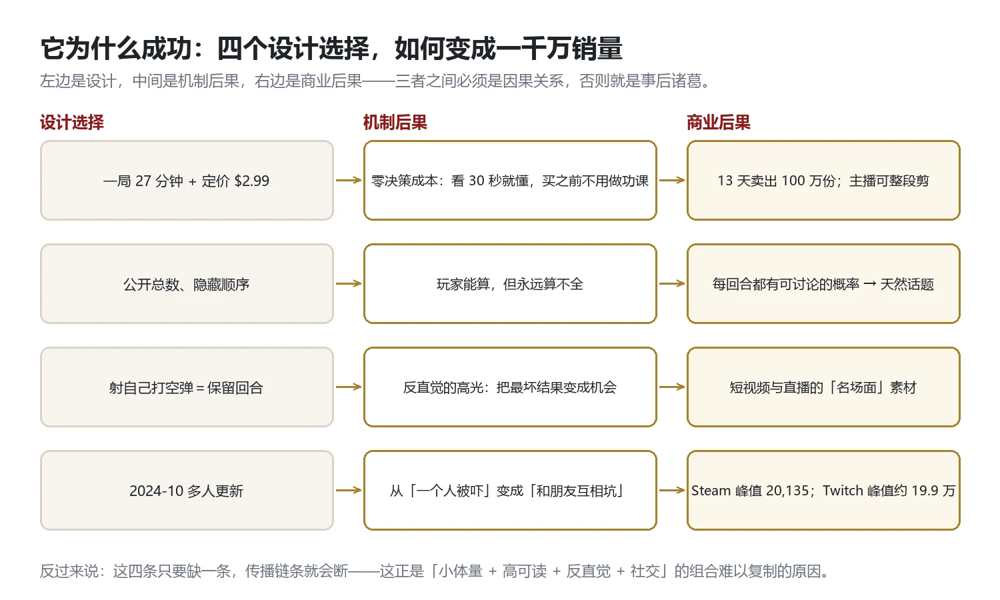

Document / 文档档案
- 拆解对象
- Buckshot Roulette（恶魔轮盘），Mike Klubnika 开发、CRITICAL REFLEX 发行、Godot 引擎
- 拆解目的
- ① 为自研项目《山羊赌局》找可借鉴的结构；② 作为求职作品集，证明"能读懂别人的游戏"
- 拆解方法
- 三层：规则真值（可复现）→ 设计意图（可解释）→ 商业结果（可引用）；每条结论标注证据强度
- 证据分级
- A：官方公告/官方页面/代码级可复现；B：权威媒体/维基/HLTB 等二手汇总；C：社区共识与推测
- 数据截止
- 2026 年 10 月（销量为官方公告口径，见 §9）
SECTION 0拆解方法：先定“拆什么”，再谈“好不好”
竞品拆解最常见的失败是把“我喜欢/我不喜欢”写成“它做对了/做错了”。所以这份文档先定三条纪律：
- 只拆能被验证的部分：规则、数值、时长、销量、更新史。主观体验（“很吓人”）只作为现象记录，不做因果断言。
- 区分“设计意图”与“事后归因”：官方访谈里说过的算 A 级；我从机制反推的算 C 级，并且明确标注。
- 每个“它做对了”都要能回答“那我能抄吗”：抄不了的优点，只能算“欣赏”，不能算“经验”。
SECTION 1产品档案
| 名称 | Buckshot Roulette（中文常译《恶魔轮盘》） |
| 开发 / 发行 | Mike Klubnika（个人）/ CRITICAL REFLEX |
| 引擎 | Godot（2023 年 9 月 Unity 收费风波后迁移；官方承认这拖慢了主机版） |
| 平台 | PC（Steam）/ itch.io 早期版本；主机版在移植中 |
| 上线 | 2024-04-04（Steam） |
| 售价 | $2.99（抓取时 5 折 $1.49） |
| 主线时长 | 约 30 分钟（HLTB 402 样本均值；官方 itch 页写 15–20 分钟） |
| 评测 | 128,474 条、95% 好评（Steam 抓取时） |
| 销量 | 官方里程碑：100 万（2024-04-17）→ 200 万 → 400 万 → 600 万 → 800 万 → 1,000 万+（2026-10-20）；CEO 另称 Steam 后台 1,050 万 |
| 在线峰值 | Steam 同时在线 20,135（2024-11，多人更新月） |
| 直播峰值 | Twitch 观看约 19.9 万（2024-11-20，与时值 Mafiathon 2 的 Kai Cenat × CaseOh 联机视频同日） |
| 开发周期 | 媒体口径“约 2 个月”完成正式版；原型是 Tabletop Simulator 里的桌游，与正式设计相隔“将近一年” |
| 前身 | 原名《Shotgun Roulette》，一度是某个更大恐怖游戏里的一个关卡 |
SECTION 2一句话拆解与核心体验
一句话：你和庄家隔桌对坐，共用一把 8 发弹仓的霰弹枪，弹仓里混着实弹与空包；你知道各有多少，但不知道顺序。
核心体验不是“开枪”，而是在信息不全的情况下做决定：
你看见的： 3 发实弹、2 发空包（总数公开，顺序隐藏）
你要判断的：当前这一发是什么？
你能做的： 用道具把“不知道”变成“知道一部分”，然后决定打谁
玩家在 30 分钟里经历的五个阶段：
- 0–2 分钟｜学会恐惧：第 1 关没有道具，纯 50/50，第一枪就决定了这一关的气氛。
- 2–8 分钟｜学会算：道具进入，玩家开始心算“还剩几实几空”。
- 8–15 分钟｜学会赌：开始理解“打自己”不是自杀；开始囤道具。
- 15–22 分钟｜学会滚雪球：道具变多，一旦领先就压着庄家打。
- 22–30 分钟｜学会结局：第 3 关“剪线”规则——血量耗尽后任何伤害致命。
第 2 章的核心洞察在这里：它把“恐怖”和“算术”绑在了一起。恐怖来自“不知道”，算术来自“知道一部分”，两者的差就是张力。
SECTION 3规则结构：三层时间单位

点击放大 ↗拆它最容易犯的错，是把三个“轮”混为一谈：
| 单位 | 定义 | 玩家的感受 |
|---|---|---|
| Micro Round | 一次出手（射一发） | “这一发会不会响” |
| Round | 一次装填周期（弹仓打空即重装） | “这个弹仓还剩什么” |
| Major Round | 大关（3 关，血量归零结束） | “我还能不能活着出去” |
一个 Round 的四个阶段：Item（发道具）→ Health（结算血量）→ Loading（装填）→ Main（对射）。注意一个细节：弹仓打空会直接跳回 Loading，跳过 Health——这让人物血量只在“一个弹仓结束”时结算，节奏因此是“弹仓级”而不是“回合级”的。
装填规则：8 发弹仓，每次装 2–8 发；至少 1 实弹 1 空包；总数为偶数时实/空相等，奇数时一方多 1（所以 3 发只能是 2:1，8 发只能是 4:4）。实弹上限 4 发。
SECTION 4六件道具：把运气切成可管理的碎片

点击放大 ↗道具是这款游戏的“技术上限”所在。它们的设计逻辑不是“给玩家超能力”，而是把不可控的概率切成可控的碎片：
| 道具 | 效果 | 本质 | 我的评价 |
|---|---|---|---|
| 香烟 | +1 点血量 | 资源 | 最稳，永远不亏（满血时无效） |
| 啤酒 | 退掉膛内这一发，不发射 | 排除法 | 最反直觉：它把“未知”直接丢掉，但也可能浪费一次已知的好机会 |
| 放大镜 | 查看当前这一发 | 信息 | 最便宜的信息，几乎永远值得用 |
| 锯子 | 本回合实弹伤害 1→2 | 放大器 | 只在“已知是实弹”时才值钱，与放大镜/手机形成连招 |
| 手铐 | 对手跳过下一回合 | 节奏 | 最强：它把“一次出手”变成“两次出手”的窗口 |
| 一次性手机 | 报出“距当前第 N 发”的种类 | 概率压缩 | 最贵的信息：可能报的是无关位置，也可能直接锁定 |
三条从道具里读出来的设计经验：
- 道具按“信息 / 资源 / 节奏 / 放大器”四类配比，而不是按“强弱”配比。四类各有下限，游戏就不会变成“抽到强道具就赢”。
- 每回合可用任意数量道具，且未用的可以跨轮保留——这把“用不用”变成了一个真实的决策，而不是“有没有”。
- 道具是“确定性资源”，信息是“不确定性资源”：道具可以囤，信息会过期（见第 5 章）。
SECTION 5信息设计：它最值得抄的一章
如果只能从一个竞品身上抄一件事，我会抄它的信息结构。
它给玩家的：本次装填的实弹/空包数量（装填阶段直接显示）、已打出的弹数（要自己心算）、当前这一发（放大镜）、未来第 N 发（手机）。
它不给的：顺序、剩余弹数的常驻 UI（社区甚至要自己做 mod 来补这个计数）。
于是玩家永远处在“能算，但算不完”的状态：
2 实 2 空 → 第一枪 50/50
手机告知“第 3 发是空” → 第 1/2/4 发为实弹的概率从 50% 变成 67% / 33%
2 实 3 空 + 三件信息道具 → 可以把概率推到接近确定
SECTION 6难度与节奏：三关是怎么搭起来的
| 关卡 | 血量 | 道具 | 新增规则 |
|---|---|---|---|
| 第 1 关 | 2 点 | 无 | 纯猜：先教“怕” |
| 第 2 关 | 4 点 | 每轮发 2 件 | 教“算” |
| 第 3 关 | 4 点 + 剪线 2 点 | 每轮发 4 件 | 教“赌”：血量耗尽后任何伤害致命 |
节奏的三个数字：一局约 27 分钟、一个弹仓 3–5 分钟、一次出手 3–8 秒。这个比例意味着：每 5 分钟就有一次“重新开始算”的机会——比“一整局只有一个血条”的压力曲线更平缓，也更适合短视频切片。
SECTION 7表现层：极简，以及一个明显的弱点
它做对的：
- 第一人称 + 只有一张桌子：视野被物理限制，恐怖感来自“看不到的地方”。
- 极简 UI：血量、弹仓、道具全部是“桌子上的东西”，几乎没有任何 HUD 面板。
- 声音承担了大部分恐怖：拉栓、上膛、空包干响，比任何血量数字都更有效。
- 庄家是一张脸：它不说话太多，但会看你——“被观察”本身就是压力。
它做错的（我认为）：
- 动画不可跳过（社区长期请愿）。这在“30 分钟”的体量里是致命的：玩家重复第 5 次装填动画时，节奏就断了。
- 单人重复性：三关结构固定，重玩的价值主要靠 RNG 与多人，纯单人二周目动力弱。
SECTION 8庄家：一个“不作弊”的 AI
社区共识与实测都指向同一个结论：庄家不作弊，也不数弹。
- 除了自己用放大镜看到的结果，以及“最后一发”的确定情况，庄家对当前这一发的判断就是 50/50。
- 它的策略很粗暴：道具到手就用掉，然后按 50/50 决定射谁。
- 因此会出现名场面：先铐住你、猛用道具、然后对着自己开枪。
这看起来是“AI 太笨”，但它其实是刻意的设计选择：一个会读心、会算牌的庄家，会让玩家把失败归因于“它作弊”；一个不完美的庄家，会让玩家把失败归因于“我赌错了”。前者摧毁信任，后者制造重玩。
SECTION 9商业与传播：三个数字与一条链条
| 数据 | 值 | 说明 |
|---|---|---|
| 售价 | $2.99 | 内容时长 30 分钟，约 $0.1/分钟 |
| 首个百万 | 发售 13 天（2024-04-17 公告） | 媒体常写“10 天”，以官方公告为准 |
| 累计销量 | 1,000 万+（2026-10-20 官方）/ 1,050 万（CEO 口径） | 六个官方里程碑可查 |
| 评测 | 128,474 条、95% | 好评率长期稳定 |
| Steam 峰值 | 20,135（2024-11） | 首发月仅 8,902，多人更新是唯一跃升点 |
| 直播峰值 | 约 19.9 万（2024-11-20） | 与时值 Mafiathon 2 的 Kai Cenat × CaseOh 联机视频同日（因果未获官方归因） |

点击放大 ↗传播链条（我的解释，B/C 级证据）：
$2.99 + 30 分钟 → 观众不需要任何前置知识，看 30 秒就懂
公开总数/隐藏顺序 → 每回合都有可讨论的概率，弹幕能参与
射自己空弹保回合 → 反直觉高光，天然适合切片
2024-10 多人更新 → 从“看别人被吓”变成“看朋友互相坑”，直播时长暴涨
SECTION 10它的四个问题
- 方差压缩技术上限：会算的玩家与不会算的玩家，在 27 分钟里拉不开差距；运气好一次就能翻盘。
- 道具滚雪球：后期道具越多，领先方越强，逆风局缺少翻盘手段（社区批评“一边倒的碾压”）。
- 节奏不可控：动画不可跳过，重复对局时体验明显下降。
- 多人模式粗糙：掉线、退房、无进度、偶发不同步（更新后逐步修复）。
这四个问题的共同点：它们都不是“设计错误”，而是“体的规模决定的上限”——30 分钟的内容量，撑不起 100 小时的深度。
SECTION 11对我们的启示：抄什么、不抄什么
| 主题 | 它怎么做的 | 我们怎么做的 | 判断 |
|---|---|---|---|
| 核心循环时长 | 一局 27 分钟 | 一局 12–18 分钟 | 抄“短”，但要更短的回合 |
| 信息结构 | 公开总数、隐藏顺序 | 同样公开总数、隐藏弹序 | 直接抄，这是最好的设计 |
| 反直觉操作 | 对自己开枪（空弹保留回合） | 打自己回血 + 空弹连锁 | 抄“结构”，不抄“具体操作” |
| 道具系统 | 6 件、一次性、可囤 | 10 张卡、一次性/挂载/延时 | 不抄：卡牌需要“可组合”而不是“可囤” |
| 表现层 | 第一人称、极简 UI、暗光 | 第一人称、零 UI 图标、理石赌桌 | 抄“方向” |
| 节奏 | 动画不可跳过（缺陷） | 全部可跳过 + 全局加速 | 反着抄 |
| 商业 | $2.99 低价换传播 | ¥38 中价换内容量 | 不抄：我们卖的是系统，不是一次体验 |
| AI | 不作弊但很笨 | 不作弊 + 规则骨架 + EV 精修 | 抄“不作弊”的伦理，升级“聪明” |
如果我来做它的续作，我会改三件事：
- 加“信息经济”：让每一条信息都有代价（比如“看一发要花 1 点血”），把“知道”变成新的资源。
- 加“对手多样性”：庄家、庄家的债主、庄家的镜子——每个改一条规则（信息 / 节奏 / 规则）。
- 加“可跳过的演出 + 可回放的复盘”：前者修节奏，后者把 30 分钟变成“可学习的 30 分钟”。
SECTION 12一页纸总结
它是什么：第一人称、隔桌对射的俄罗斯轮盘恐怖游戏，27 分钟，3 美元。
它为什么成立：
① 信息“能算但算不全”——总公开、序隐藏；
② 对自己开枪的收益不对称——空弹赚行动，实弹只亏 1 点；
③ 时长与价格低到没有决策成本——看 30 秒就懂，买之前不用做功课；
④ 2024-10 多人更新把它从“个人恐怖”变成“社交赌桌”。
它的问题：方差压缩技术上限、道具滚雪球、动画不可跳过、多人粗糙。
我抄了什么：信息结构、反直觉操作的“结构”、极简表现、不作弊的 AI。
我反着抄了什么：动画必须可跳过、定价要用内容量撑、AI 要更聪明但不作弊。
一句话结论：它证明“小体量 + 高可读 + 反直觉 + 社交”可以打败“大体量 + 深系统”，
附录资料来源与可信度
| 来源 | 用途 | 级别 |
|---|---|---|
| Steam 商店页（appid 2835570） | 价格、评测数、好评率、标签、发行信息 | A |
| Steam 官方公告（Steam News API，53 条） | 六个销量里程碑、多人更新时间 | A |
| 官方 itch.io 页面 | 早期售价、“15–20 分钟”内容量表述 | A |
| 官方访谈（GamesRadar / 80.lv 转述） | 开发周期、Unity→Godot 迁移、原型来源 | B |
| HLTB | 主线 27 分钟、Main+Extra 2 小时、Any% 8:04 | B |
| Fandom Wiki / Steam 指南（多份） | 装填规则、道具效果、关卡血量 | B（存在冲突处已标注） |
| SteamDB / SteamCharts | 同时在线峰值 20,135 | B |
| TwitchTracker | 直播观看峰值约 19.9 万 | B |
| Reddit / 社区讨论 | “庄家不作弊”“动画不可跳过”等共识 | C |
— 全文完 —